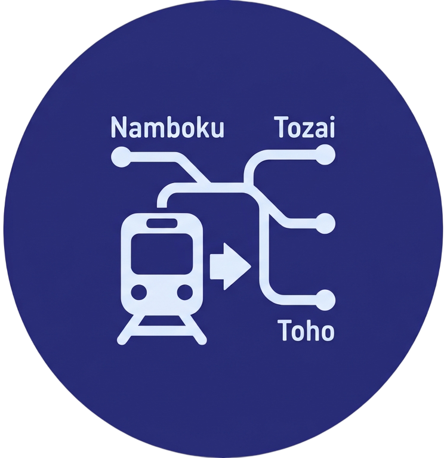
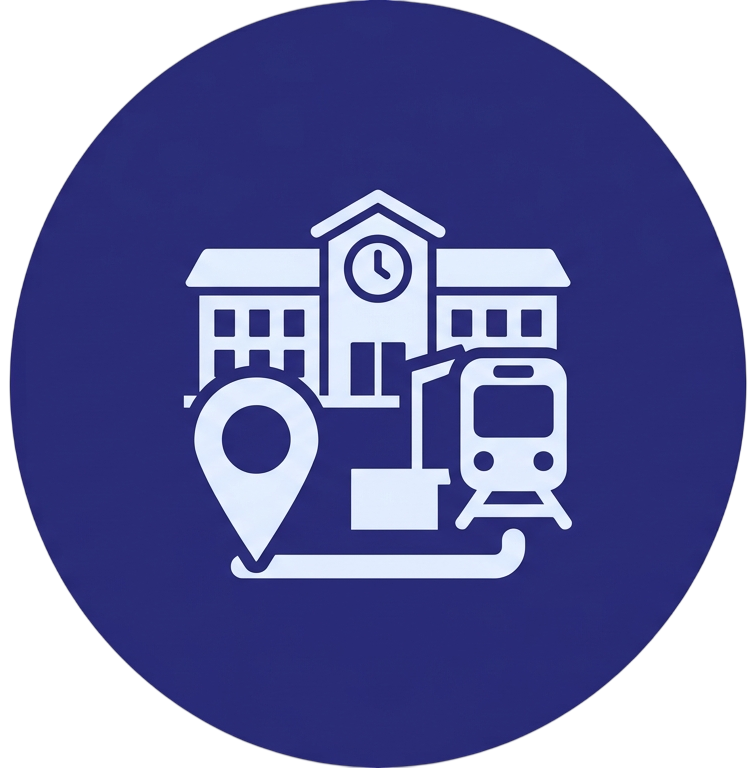

Metro de Sapporo
Metro de Sapporo
Agradecemos profundamente tu preferencia y la confianza depositada en nosotros al elegirnos como tu medio de transporte habitual. Para nuestro equipo, es un verdadero honor acompañarte en cada uno de tus trayectos. Con el firme propósito de garantizar que disfrutes de una experiencia de viaje impecable, cómoda y sin contratiempos desde el primer momento, te invitamos a seguir cuidadosamente cada una de las instrucciones detalladas a continuación para acceder a tu boleto de forma rápida y segura. ¡Te deseamos un excelente viaje!
Ingresa la información personal y de pago requerida para la transacción que permitirá garantizar la correcta emisión del comprobante.

Elige la línea específica para tu trayecto (como Namboku, Tozai o Toho) para definir el corredor de transporte principal sobre el cual planificarás tu viaje.

Selecciona las estaciones exactas de origen y destino dentro de la línea elegida para fijar tus puntos de abordaje y desembarque, determinando la ruta exacta y la tarifa final del billete.